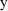
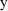

NONMEM Users Guide Part V - Introductory Guide - Chapter 8
1. What This Chapter is About
2. $ERROR Abbreviated Code
2.1. Syntax
2.2. When are $ERROR Statements Evaluated?
3. Error Models
3.1. The Additive Error Model
3.2. The Constant Coefficient of Variation andExponential Models
3.3. Combined Additive and CCV Error Model
3.4. The Power Model
3.5. Two Different Types of Measurements
3.6. Two Different Types of Observations
3.7. More than One Indicator Variable
NONMEM Users Guide Part V - Introductory Guide - Chapter 8
Chapter 8 -
$ERROR Record
1. What This Chapter is About
This chapter tells how to
write a simple $ERROR record for PREDPP. This chapter is
meant to be read in parallel with Chapters 3 and
4.
2. $ERROR Abbreviated Code
$ERROR abbreviated code
consists of a block of $ERROR statements, one per
line. The $ERROR abbreviated code must be preceded by a
record containing the characters "$ERROR". This
record and the abbreviated code constitute the $ERROR
record.
$ERROR statements
describe the error model for PREDPP. These statements are
very similar for individual data and for population data. In
fact, by making use of variables called ERR variables, the
$ERROR statements are identical for both kinds of
data.
2.1. Syntax
The syntax of a $ERROR
record is very similar to that of a $PK record. Certain
differences will be mentioned here.
There must be an
assignment statement giving a value to a special (reserved)
variable Y. Y is a random variable representing the random
variable y (the modeled observation). Y is usually defined
in terms of a special (reserved) variable F, which
represents the prediction for Y. When the data are from a
population, F is a random variable. With individual data,
ETA variables may be used in the definition of Y. With
population data, EPS variables may be used in the definition
of Y. There are also special random variables called ERR
variables. The variable ERR(I) is the same as ETA(I) or
EPS(I), depending on whether the data are individual or
population, respectively. For the purpose of giving a
general discussion, applying equally to both individual and
population data, ERR will be used in all the examples in
this chapter. (It is also useful to use ERR in $ERROR
statements as a practical matter. Sometimes the same data is
analyzed from both the population and the individual point
of view. By using ERR variables, changes to the NM-TRAN
input file are minimized.) An ERR variable (as with ETA and
EPS variables) must always include a subscript (e.g.,
ERR(1)), even when there is only one such variable in the
model.
Variables computed within
$PK statements may be used in $ERROR statements, but not
vice versa.
2.2. When are $ERROR Statements Evaluated?
$ERROR statements are
normally evaluated with every event record. This may be more
frequent than is necessary. PREDPP can be instructed that
the set of event records with which the $ERROR statements
are evaluated is to be limited to only observation events,
once per individual record, or once per problem. Such
limitation does not apply to the Simulation Step (Chapter
12, Section 4.8). With the additive (3.4) and constant
coefficient of variation (3.5) error models, and with the
exponential error model, NM-TRAN instructs PREDPP to
evaluate the $ERROR statements only once per problem. Again,
the CALL data item can be used to force evaluation of the
$ERROR statements with any event records.
3. Error Models
The following sections
show how the error models of Chapter 3 are expressed using
$ERROR statements.
3.1. The Additive Error Model
This is the error model
(3.4):
Y=F+ERR(1)
Both examples in Chapter 2 use this error model.
3.2. The Constant Coefficient of Variation andExponential Models
This is the CCV error
model (3.5):
Y=F*(1+ERR(1))
This error model can also be coded as:
Y=F+F*ERR(1)
Here, the variable F has been "multiplied
through". The choice is a matter of style.
This is the exponential
error model (3.5a):
Y=F*EXP(ERR(1))
When the $ERROR
statements consist solely of one of these statements (in any
of the forms), the output from PREDPP will include the
message:
ERROR IN LOG Y IS MODELED
This is done because during data analysis NONMEM cannot
distinguish between the CCV error model
and the exponential error model
 , for which
†. By using the latter model and modelling the error
in
rather than in

, NM-TRAN enables PREDPP to achieve an improvement in run
time.
, for which
†. By using the latter model and modelling the error
in
rather than in

, NM-TRAN enables PREDPP to achieve an improvement in run
time.
----------
† During
Simulation, NONMEM does distinguish between the CCV and
exponential error models.
----------
3.3. Combined Additive and CCV Error Model
This is the error model
(3.6):
Y=F+F*ERR(1)+ERR(2)
3.4. The Power Model
This is the error model
(3.7):
Y=F+F**P*ERR(1)
The variable P must be assigned a value before its use
above. P is typically identified with an element of
 so that it can be estimated in the fitting process. Let us
assume that
so that it can be estimated in the fitting process. Let us
assume that
 is chosen for this purpose. Then an alternative coding is:
is chosen for this purpose. Then an alternative coding is:
Y=F+F**THETA(4)*ERR(1)
3.5. Two Different Types of Measurements
We have already seen how
an indicator variable, e.g., ASY, can be used in $PK
statements for a variety of purposes. The same technique is
used in $ERROR statements. Consider model (3.8) where the
variable ASY has the value 1 or 0, corresponding to assay 1
or assay 2. ASY is a data record item. Then the error model
(3.8) is coded:
Y=F+ASY*ERR(1)+(1-ASY)*ERR(2)
This model can also be
coded in several ways, the choice of which is a matter of
style.
IF
(ASY.EQ.1) THEN
Y=F+ERR(1)
ELSE
Y=F+ERR(2)
ENDIF
IF
(ASY.EQ.1) Y=F+ERR(1)
IF (ASY.NE.1) Y=F+ERR(2)
Y=F+ERR(2)
IF (ASY.EQ.1) Y=F+ERR(1)
3.6. Two Different Types of Observations
In Chapter 3, Section
3.6, an example is given in which there are two kinds of
observations, plasma (
) and urine (
). With PREDPP, measurements from different compartments of
the model are recorded in the DV data item of different
observation event records. The CMT data item identifies the
compartment from which the prediction associated with the
event record is to be obtained. When the $ERROR statements
are evaluated for a given event record, the variable F
contains the prediction from the compartment specified for
that event record. All that need be done is to select the
correct error model, depending on the compartment. Suppose,
for example, that ADVAN2 is used, so that the central
compartment is compartment 2 and the output (urine)
compartment is compartment 3. Then the error model (3.10)
can be coded:
TYP=0
IF (CMT.EQ.2) TYP=1
Y=F+TYP*ERR(1)+(1-TYP)*ERR(2)
This model can also be
coded in several ways, one of which is shown here:
IF (CMT.EQ.2) THEN
Y=F+ERR(1)
ELSE
Y=F+ERR(2)
ENDIF
3.7. More than One Indicator Variable
In Chapter 3, Section
3.7, an example is given in which there are three kinds of
observations. Suppose that there are two data items, ASY1
and ASY2. ASY1 is 1 if assay 1 is used and 0 otherwise. ASY2
is 1 if assay 2 is used and 0 otherwise. This is the error
model (3.11):
Y=F+ASY1*ERR(1)+ASY2*ERR(2)+(1-ASY1)*(1-ASY2)*ERR(3)
This model can also be
coded in several ways, one of which is shown here:
Y=F+ERR(3)
IF (ASY1.EQ.1) Y=F+ERR(1)
IF (ASY2.EQ.1) Y=F+ERR(2)
TOP
TABLE OF CONTENTS
NEXT